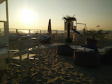

Gabriel est un étudiant à La Haute École de la Province de Liège, il a commencé ces études en 2013. Pour son cours de Design Web il a dû réaliser un CV et pour cela il s'est inspire du site de Google ...
Gabriel est un étudiant à la Haute École de la Province de Liège, il a commencé ces études en 2013 et dans le cours de Systèmes de Gestion de Contenu il a appris à utiliser le CMS Spip ...
Gabriel est un etudiant a l'haute ecole de la Province de Liege, il a commence ces etudes en 2013 et pour son cour de Design Web il a du realiser un CV et pour cela il c'est inspire du site de google ...
Gabriel est un etudiant a l'haute ecole de la Province de Liege, il a commence ces etudes en 2013 et pour son cour de Design Web il a du realiser un CV et pour cela il c'est inspire du site de google ...
Gabriel est un etudiant a l'haute ecole de la Province de Liege, il a commence ces etudes en 2013 et pour son cour de Design Web il a du realiser un CV et pour cela il c'est inspire du site de Google ...
Gabriel est un etudiant a l'haute ecole de la Province de Liege, il a commence ces etudes en 2013 et pour son cour de Design Web il a du realiser un CV et pour cela il c'est inspire du site de google ...

Gabriel Martinez
Etudiant - Développeur Web
Gabriel Martinez, est un étudiant d'origine Dominicain à la Haute École de la Province de Liège, passionné par le monde du web, la danse, la musique et la photographie ...